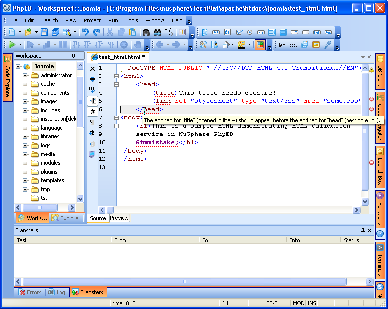

Image & Validator Check

Image by NuSphere
Youtube Video
Video by Envato Tuts+ on YouTube
This video explains why validating your code is a crucial step in web development. It shows how developers can use validation tools to check their HTML for errors, ensure proper structure, and follow web standards. By identifying mistakes early, validation helps improve website performance, accessibility, and compatibility across different browsers.
Article
This article explains what HTML validation is and why it is important for web development. HTML validation is the process of checking a website's code to make sure it follows proper syntax and the official standards set by organizations like the World Wide Web Consortium (W3C). Valid HTML ensures that web pages are structured correctly and free of errors that could cause display issues across different browsers.
HTML and CSS Code Validators
Code validators ensures that the HTML and CSS codes are error free before the website is used publicly. These tools are useful and all web developers should use them to make sure that there are no errors in their code.